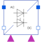
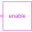
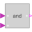

HalfControlledBridge2PulseTwo pulse Graetz half controlled rectifier bridge |

|
Diagram
{kind=link}
Information
This information is part of the Modelica Standard Library maintained by the Modelica Association.
General information about AC/DC converters can be found at the AC/DC converter concept
This is a two pulse Graetz half controlled rectifier bridge. The firing signal fire_p is connected
with thyristor thyristor_p1.
The firing signal fire_n is connected
with thyristor thyristor_p2.
The circuit topology is the same as in
Examples.ACDC.RectifierCenterTap2Pulse.
Parameters (12)
| useHeatPort |
Value: false Type: Boolean Description: =true, if heatPort is enabled |
|---|---|
| T |
Value: 293.15 Type: Temperature (K) Description: Fixed device temperature if useHeatPort = false |
| useConstantEnable |
Value: true Type: Boolean Description: true = disabled boolean input, use constantEnable |
| constantEnable |
Value: true Type: Boolean Description: Constant enabling of firing signals |
| RonDiode |
Value: 1e-05 Type: Resistance (Ω) Description: Closed diode resistance |
| GoffDiode |
Value: 1e-05 Type: Conductance (S) Description: Opened diode conductance |
| VkneeDiode |
Value: 0 Type: Voltage (V) Description: Diode forward threshold voltage |
| RonThyristor |
Value: 1e-05 Type: Resistance (Ω) Description: Closed thyristor resistance |
| GoffThyristor |
Value: 1e-05 Type: Conductance (S) Description: Opened thyristor conductance |
| VkneeThyristor |
Value: 0 Type: Voltage (V) Description: Thyristor forward threshold voltage |
| offStart_p1 |
Value: true Type: Boolean Description: Boolean start value of variable thyristor_p1.off |
| offStart_p2 |
Value: true Type: Boolean Description: Boolean start value of variable thyristor_p2.off |
Connectors (8)
| ac_p |
Type: PositivePin Description: Positive AC input |
|
|---|---|---|
| ac_n |
Type: NegativePin Description: Negative AC input |
|
| dc_p |
Type: PositivePin Description: Positive DC output |
|
| dc_n |
Type: NegativePin Description: Negative DC output |
|
| heatPort |
Type: HeatPort_a Description: Conditional heat port |
|
| enable |
Type: BooleanInput Description: Enables fire and notFire |
|
| fire_p |
Type: BooleanInput Description: Firing signal of positive potential transistor |
|
| fire_n |
Type: BooleanInput Description: Firing signal of negative potential transistor |
Components (7)
|  | enableLogic |
Type: EnableLogic Description: Enabling logic |
|---|---|---|
|  | andCondition_p |
Type: And Description: And condition for positive firing signal |
| andCondition_n |
Type: And Description: And condition for negative firing signal |
|
| thyristor_p1 |
Type: IdealThyristor |
|
| thyristor_p2 |
Type: IdealThyristor |
|
| diode_n1 |
Type: IdealDiode Description: Diode connected to negative DC potential |
|
| diode_n2 |
Type: IdealDiode Description: Diode connected to negative DC potential |
Used in Examples (1)
|
Modelica.Electrical.PowerConverters.Examples.ACDC.RectifierBridge2Pulse Two pulse Graetz half controlled bridge with resistive load |